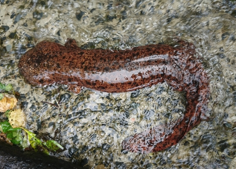

(백엔드 애들이 받아올 사용자 아이디)님 로그아웃
Reptile Test

Q10. 도롱뇽은 ‘물속에 사는 도마뱀’이라는 뜻으로 불립니다. 그래서 도롱뇽 설명에 대해 옳지 않은?
1.
꼬리가 길다.
2. 햇빛이 강한 여름에는 햇빛을 쬐러 자주 나온다.
3. 몸의 넓이는 좁다.
4. 서늘한 밤에만 움직인다.
2. 햇빛이 강한 여름에는 햇빛을 쬐러 자주 나온다.
3. 몸의 넓이는 좁다.
4. 서늘한 밤에만 움직인다.